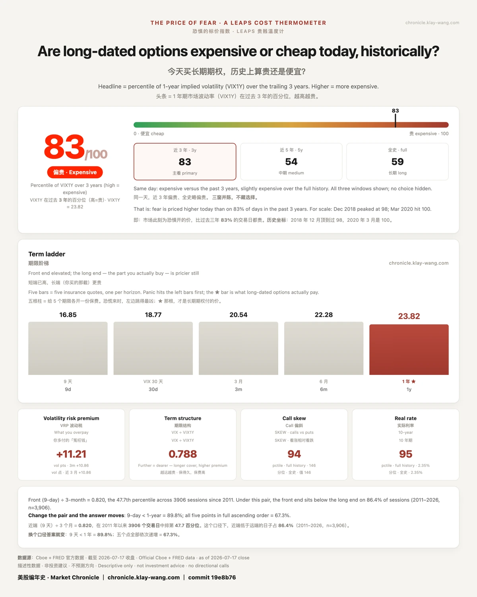
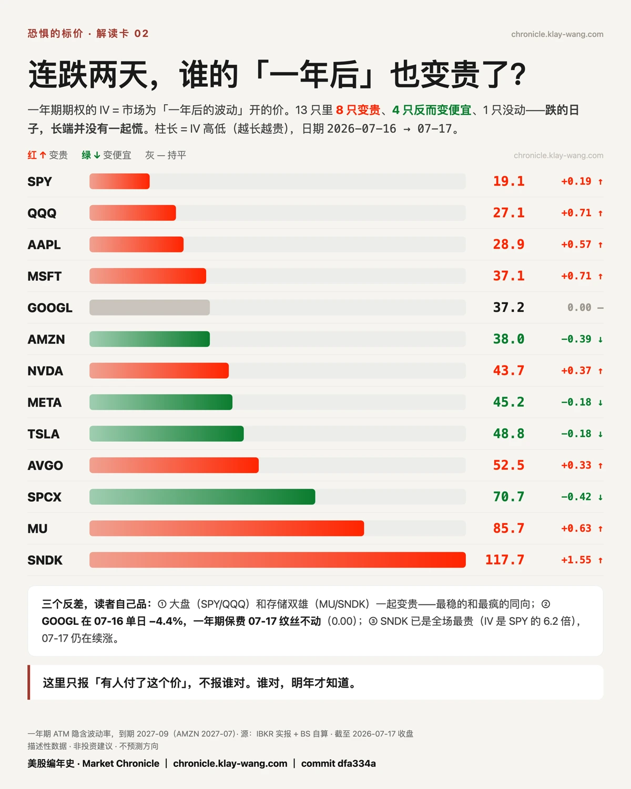
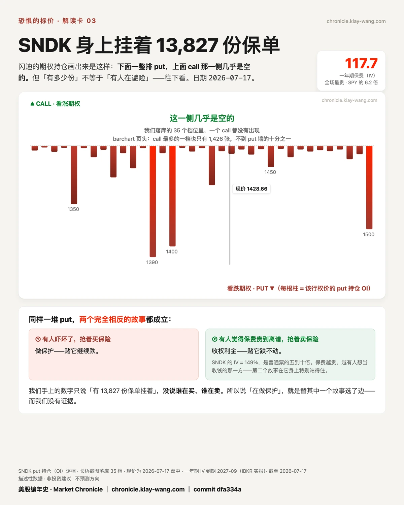

恐惧的标价：一年期的保费（波动率）排到过去三年的第 83 百分位（上一交易日是 77）。换句话说，此刻给一年后的波动开的价，比过去三年 83% 的日子都贵。历史坐标摆在这：2018 年 12 月这个数顶到过 98，2020 年 3 月是 100。
先说清楚这里的"怕"是什么。它不是情绪，是个价钱：你手里有股票，想买一份跌了赔我的保险，这保险现在要多少钱，市场就有多怕。下面这三样，VIX、期货、单只股票的期权，量的都是这一份保险的报价。报价往上走，就是怕在变贵。
值得关注的是三条互不相识的轨道，上周五同一天朝一个方向动：
算出来的指数：：VIX 从 16.73 到 18.77，一天 +12%；
期货市场的真钱：VX 近月结算从 17.27 到 18.80，涨了 1.53 个点，而一年后的合约只动了 0.17；
真实期权报价：13 只票的一年期保费里，8 只变贵。
这三条线，平时压根不搭界。VIX 是公式算出来的一个数；VX 期货那头，是市场拿真金白银买的保险；券商给一只只股票开的一年期报价，又是另一拨人、另一张桌子。所以你看：一条线喊怕，我会当它是噪音；三条互不相识的线，同一个周五、朝一个方向喊，就不好再当巧合了。不是哪块表坏了，是市场自己掏钱，把怕重新标了一遍价。
但真正让我多看两眼的，不是它们一起动，是它们怕的时间不一样。眼前这几周，三条线一块使劲：：VIX 一天蹿 12%，近月期货跟涨 1.53 个点。把镜头往后拉到一年，画风就变了：期货那头，一年后的合约几乎没挪，才 0.17；单只股票那头，一年期的保费 13 只里有 8 只在悄悄变贵。同样是一年以后，一把尺子说天下太平，另一把尺子已经在加价。大盘还端着，个股先把价加上去了。
这道缝，才是这周我盯着的地方。一条轨可以错，三条同日同向，很难都错。
但也别把它读成末日。
幅度写在那儿：短端在跳，长端只是轻轻抬：市场把现在的价签换得飞快，一年后的价签只挪了零点几个 vol 点。

13 只里还有 4 只（AMZN、META、TSLA、SPCX）的长端反而变便宜了。
最耐人寻味的是 GOOGL：它上周四单日砸掉 4.4%，一年期保费上周五纹丝不动，一个数没变。
跌的日子，长端没有一起慌。这是描述，不是判断，谁对，明年才知道。
最贵的那一端有张耐人寻味的脸：AI 存储双雄，闪迪（SNDK）和美光（MU）。它俩上周四跌得全宇宙垫底（SNDK −12.63%、MU −5.65%），上周五盘前双双翻红

而与此同时，市场给它们一年后标的价，正好是全场最高的两级：SNDK 的一年期保费是 SPY 的 6.2 倍，MU 是 4.5 倍。
跌得最狠、保费最贵，是同一对票。我只把这个价陈列出来，不猜是谁在付、也不说谁对。
以上是7.17 复盘。